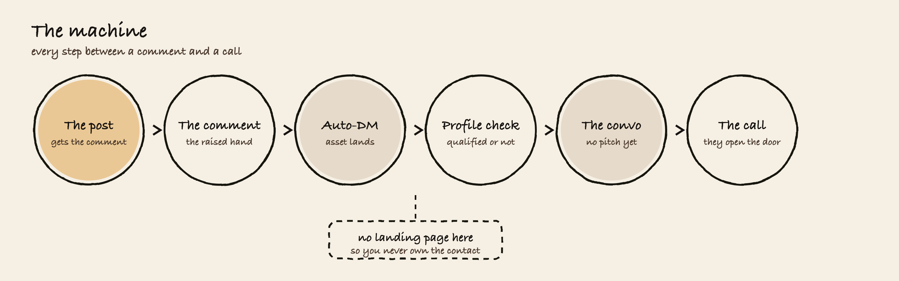
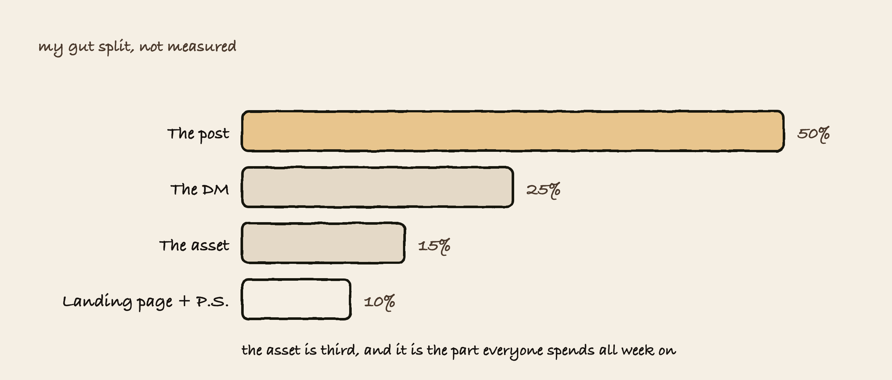
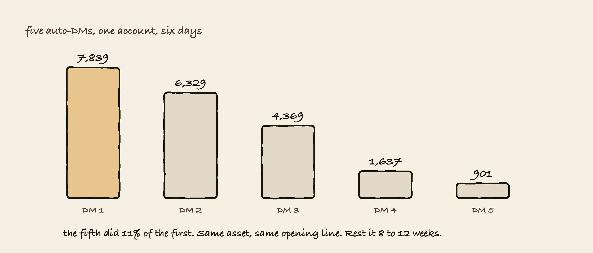
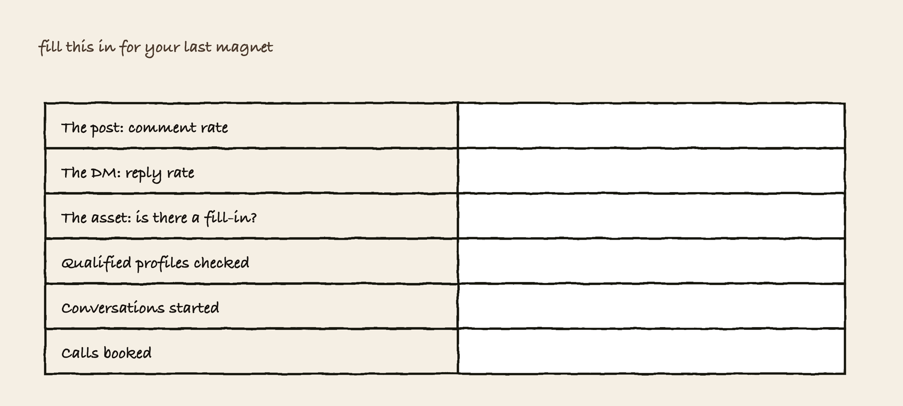

Most people ship a PDF and wait. Then they conclude lead magnets don't work.
The asset was never the thing. The machine around it is the thing, and almost nobody builds it.
I've posted 3 lead magnets a week for the last 18 months. This is what I'd tell you after all of them.
When someone comments on a lead magnet they are literally showing interest in your resource and what you have to offer. Getting a lot of comments is also the beginning of more people seeing it, because it tells the algorithm the post is cracked.

After they comment, they get an automatic DM with the resource.
After they get it, we check their profile. If you can gather that they're qualified, you try to spark a convo without being salesy, just ask what they thought about it. If they reply you have a conversation going, and from there you ask what they're working on. That's the qualifying step and it doesn't feel like one.
If they're a fit you don't pitch on that message. You keep it going until they mention a problem themselves. That's when the call comes up, and it lands soft because they brought it up.
The dashed box is the hole in my own machine right now. The DM links straight to the doc, there's no landing page and no email capture, so if they never reply the lead is gone.
If you split the result across the parts, this is roughly how I'd weight it. It isn't measured, so treat it as my gut.

The post is half of it. If the post doesn't pull comments then nothing downstream runs at all, and a beautiful asset behind a dead post does literally nothing.
The DM is next. It's the only part that turns a claim into a conversation, and most people waste it by dropping a link and going quiet.
The asset is third. It has to be good enough that they don't feel tricked, and after that the extra polish doesn't buy you much.
It clicked when I started testing the same resource under different post copy. Same exact thing landing in their DMs, different copy and different image on top, and the perceived value moved.
The resource never changed. What changed was what they thought they were getting before they got it.

The reason isn't the mechanism. The first one beat every long-form post that week except one. The reason is that four of the five were the same asset with the same opening line.
Rotate the shape, don't cut the volume. One of any given asset type per week, maximum.
The post breaks most often. Everything else is fine and the post just doesn't pull, and then people go rewrite the asset, which fixes nothing.
Comment rate is how you tell the difference. Comments divided by views, not the raw count. Normal reach and no comments means the title or the promise. Reach collapsing means distribution, and the magnet is innocent. Two different problems, and people mix them up constantly.
Take your last magnet and fill this in. If you can't fill a row, that row is the part of your machine that doesn't exist yet.

The rule I'd hold you to: if there's nothing in your magnet that the reader has to fill in, they skim it, close it, and you never hear from them again.
Built by Mauro, who runs this exact content engine daily for a real B2B agency.
Questions on any of it, DM me @maurojpelle.